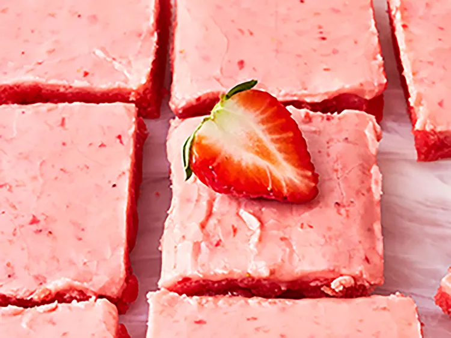

Easy Strawberry Brownies

These easy strawberry brownies are made with strawberry cake mix, and iced with a fresh strawberry glaze.
Ingredients
- 1 (15.5 ounce) box strawberry cake mix
- 1/2 cup unsalted butter, melted
- 2 large eggs
- 2 teaspoons vanilla extract, divided
- 3 strawberries, chopped
- 1 1/2 cups confectioner's sugar, or more as needed
- 1/4 teaspoon kosher salt
Steps
- Preheat the oven to 350 degrees F (180 degrees C). Lightly grease an 11x7-inch baking dish.
- Mix cake mix, melted butter, eggs, and 1 teaspoon vanilla extract in a bowl until well combined. Spread mixture into an even layer in the prepared baking dish.
- Bake in the preheated oven until a toothpick comes out clean when inserted into the center, 16 to 18 minutes. Allow brownies to cool in the pan for about 20 minutes.
- Meanwhile, puree strawberries and remaining teaspoon of vanilla extract in a food processor or with an immersion blender until smooth.
- Stir strawberry mixture into confectioner’s sugar until smooth, adding extra sugar as necessary to reach the consistency of a glaze. Add salt and stir.
- Spread strawberry glaze evenly over the cooled brownies and let stand until completely cooled. Cut into 12 squares, or refrigerate until ready to serve.

Other recipes
Home